ファイルの一覧表示(DIR)
ディレクトリにあるファイルとサブディレクトリの一覧を表示することができる DIR コマンドの使い方について解説します。
目次
DIRコマンドの使い方
DIR コマンドを実行するとディレクトリに含まれるファイルとサブディレクトリの一覧を表示することができます。書式は次の通りです。
DIR [ドライブ:][パス][ファイル名] [/A[[:]属性]] [/B] [/C] [/D] [/L] [/N]
[/O[[:]ソート順]] [/P] [/Q] [/R] [/S] [/T[[:]タイムフィールド]] [/W] [/X] [/4]
多くのオプションがありますので、この中でも比較的よく使用すると思われる次のオプションにここでは解説していきます。
DIR [パス] [/A[[:]属性]] [/B] [/D] [/O[[:]ソート順]] [/S] [/W]
ディレクトリにあるファイルとサブディレクトリの一覧を表示する
カレントディレクトリにあるファイルとサブディレクトリの一覧を表示するには、引数やオプションなしで次のように実行します。
dir
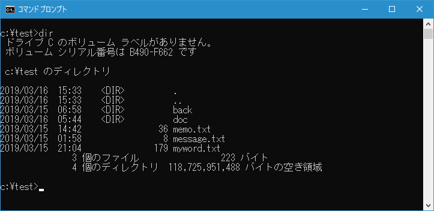
ファイルとサブディレクトリの一覧が表示されました。一覧の中でディレクトリには <DIR> と表示がされています。
指定したディレクトリにあるファイルとサブディレクトリの一覧を表示することもできます。例えばカレントディレクトリが c:\test の時にディレクトリ内にある c:\test\back ディレクトリに含まれるファイルとサブディレクトリの一覧を表示するには次のように実行します。
dir back
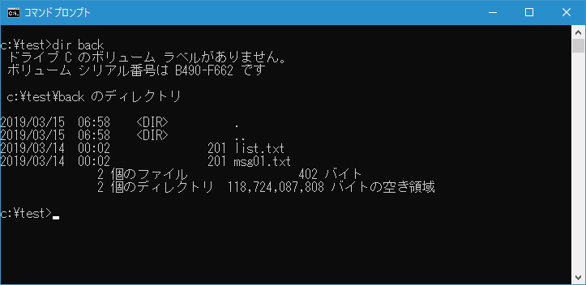
指定したディレクトリにあるファイルとサブディレクトリの一覧が表示されました。
指定した属性のファイルを表示する
ファイル一覧を表示する時に指定した属性のファイルだけを表示するには「/A」オプションを使用します。(属性の前の「:」は省略可能です)。
DIR [パス] /A:属性
指定できる属性は以下の通りです。
D : ディレクトリ
R : 読み取り専用
H : 隠しファイル
A : アーカイブ
S : システム ファイル
I : 非インデックス対象ファイル
L : 再解析ポイント
- : その属性以外
例えばカレントディレクトリで DIR コマンドを実行する時に、ディレクトリの一覧だけを表示したい場合には次のように実行します。
dir /a:d
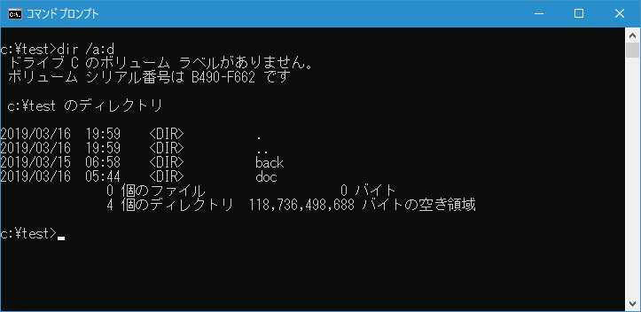
属性の「-」は否定を表します。例えばカレントディレクトリで DIR コマンドを実行する時に、ディレクトリ以外の一覧だけを表示したい場合には次のように実行します。
dir /a:-d
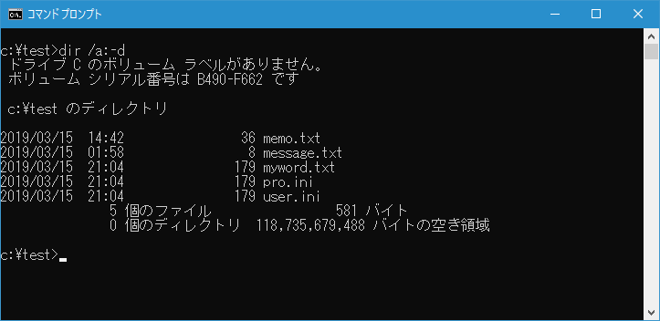
属性を複数記述すると、属性1 AND 属性2 のようになります。例えばカレントディレクトリで「読み取り専用」且つ「隠しファイル」の一覧だけを表示したい場合には次のように実行します。
dir /a:rh
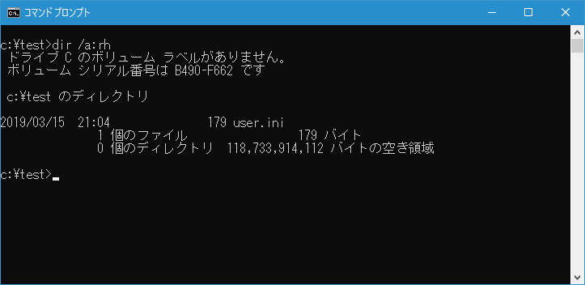
ATTRIB コマンドを使ってカレントディレクトリにあるファイルの属性を表示してみると、読み取り専用且つ隠しファイルのファイルは user.ini ファイルだけなので先ほどの結果が正しいことが確認できます。(ATTRIB コマンドについては「属性の表示と設定(ATTRIB)」で解説します)。
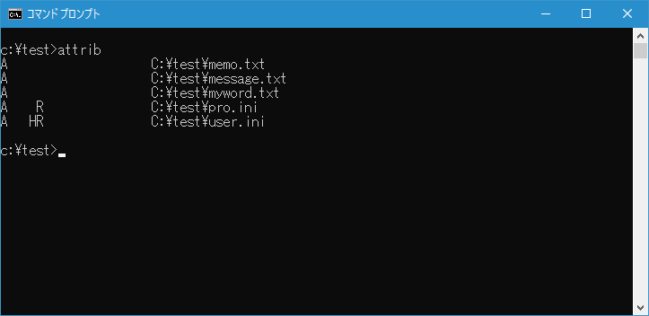
表示形式を変更する
例えばカレントディレクトリで DIR コマンドを実行する時に、ファイル名またはディレクトリ名だけを表示したい場合には「/b」オプションを付けて実行します。
dir /b
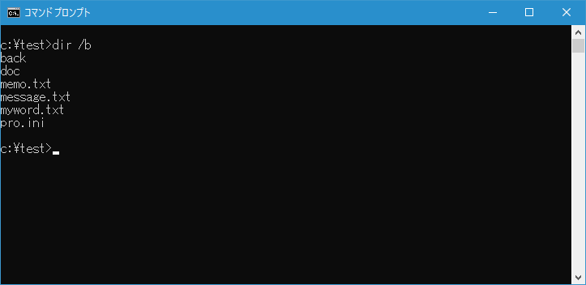
-- --
例えばカレントディレクトリで DIR コマンドを実行する時に、ファイル名またはディレクトリ名をワイド形式で表示したい場合には「/w」オプションを付けて実行します。
dir /w
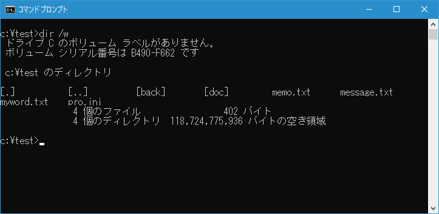
-- --
例えばカレントディレクトリで DIR コマンドを実行する時に、ファイル名またはディレクトリ名を縦方向にワイド形式で表示したい場合には「/d」オプションを付けて実行します。
dir /d
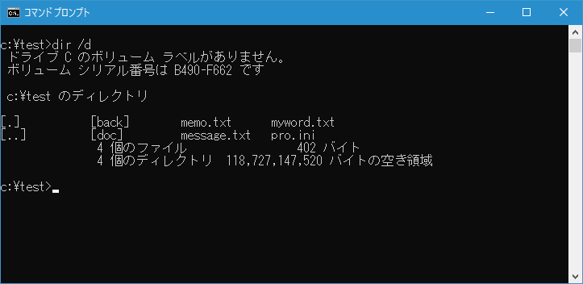
並べ替え方法を指定する
DIR コマンドを実行した時、デフォルトでは名前順に並び替えられてファイルおよびディレクトリの一覧が表示されます。並び替えの方法を変更するには「/O」オプションを使用します。(ソート順の前の「:」は省略可能です)。
DIR [パス] /O:ソート順
指定できるソート順は以下の通りです。
N : 名前順 (アルファベット)
S : サイズ順 (小さい方から)
E : 拡張子順 (アルファベット)
D : 日時順 (古い方から)
G : グループ (ディレクトリから)
- : 降順
例えばカレントディレクトリで DIR コマンドを実行する時に、サイズ順にファイル名やディレクトリの一覧を表示したい場合には次のように実行します。
dir /o:s
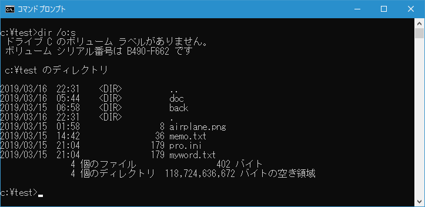
属性の「-」をつけると並び替えの順番が反対となります。例えばカレントディレクトリで DIR コマンドを実行する時に、名前順で並び替えて降順でファイル名やディレクトリ名の一覧を表示したい場合には次のように実行します。
dir /o:-n
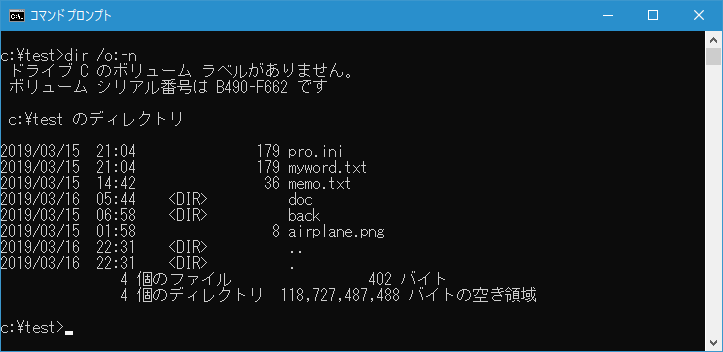
サブディレクトリに含まれるファイルやディレクトリも表示する
例えばカレントディレクトリで DIR コマンドを実行する時に、サブディレクトリに含まれるファイルやディレクトリも含めて表示するには「/s」オプションを付けて実行します。
dir /s
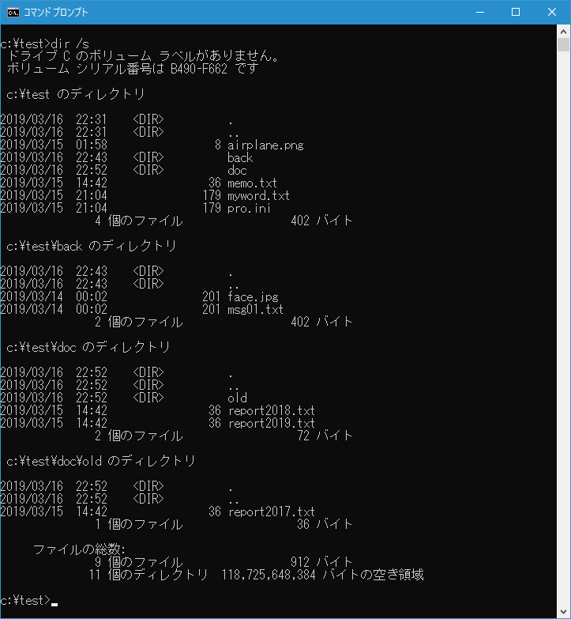
-- --
DIR コマンドを使って対象のディレクトリに含まれるファイルとディレクトリの一覧を表示する方法について解説しました。
( Written by Tatsuo Ikura )

著者 / TATSUO IKURA
初心者～中級者の方を対象としたプログラミング方法や開発環境の構築の解説を行うサイトの運営を行っています。